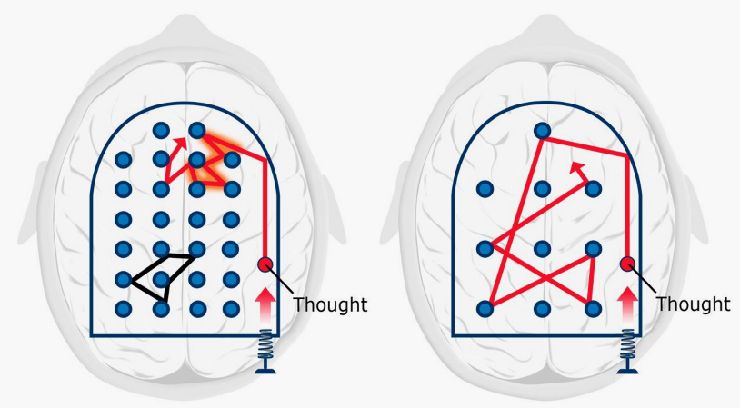

How to learn
Table of Contents
Learning how to learn
- What's learning
- Using the brain to remember and understand the knowledge, to make quick and correct decisions in the life
- Learning needs practice and time, bit by bit, day by day
- 拖延症, last minure of hard-working can't build solid chunks of long-term memory
- Habit of procrastination
- Cue: trigger into zombie mode
- location
- time
- how you feel
- reaction
- Routine: zombine mode
- plan
- plan your quitting and break time
- weekly list of key tasks / track them
- Reward: feeling pleasure
- Delay rewards unitl you finish the task
- Belief: Habits have power because you belive in them
- Cue: trigger into zombie mode
- Two learning modes of brain
- Focused:
- concentrating the mind
- 牛角尖
- Diffuse:
- let the mind run free, more creative
- 放松
- Hard start, jump to easy
- Balance between between focused and diffuse mode

- Focused:
- Memory System
- working memory: bad balckboard
- long term memory: warehouse
- Working memory is the part of memory that has to do with what you are immediately and consciously processing in your mind.
- When you encounter something new, you often use your working memory to handle it. If you want to move that information into your long term memory, it often takes time and practice.
- Repetition is needed so your metabolic vampires—natural dissipating processes—don't suck the memories away.
- Overcoming procrastination
- Recall and Self Tests
- Pretend you need to teach what you are learning to a five-year old
- visual and space
- try to see, feel, listing, smell
- analogy(类比), metophor(比喻)
- 可视化, the more visual, the better
- 记忆宫殿
- Index card
- Using visual to remember and understand abstract subjects
- Chunking
- focused: without interpretion
- understand: connections, seeing the big picture
- practice: context, when to use this chunk, working memory into long term memory
- diffuse: combine chunks, interleave
- Sleep and Exercise